library(here) # relative path
library(paletter) # package to
library(ggplot2)
#extract color palette
image_path <- here::here("Blog", "images", "Korn.jpeg")Blog Example
NuMetalR
It was recently announced that nu-metal pioneers, Korn, have partnered with a makeup company to turn their iconic 3rd record, Follow The Leader, into a color palette.

Inspired by this, I wanted to bring the world of nu-metal into R and the awesome visualization tool ggplot. Did anyone ask for this? No. Does anyone want this? Also no.
paletteer

I stumbled upon the R package paletter that allows you to take any picture and extract the optimized palette. It does this by using an unsupervised learning technique (k-means clustering).
It is pretty simple to use. I will show you how.
Korn - It’s On!
First, you need to save the location of the image file:
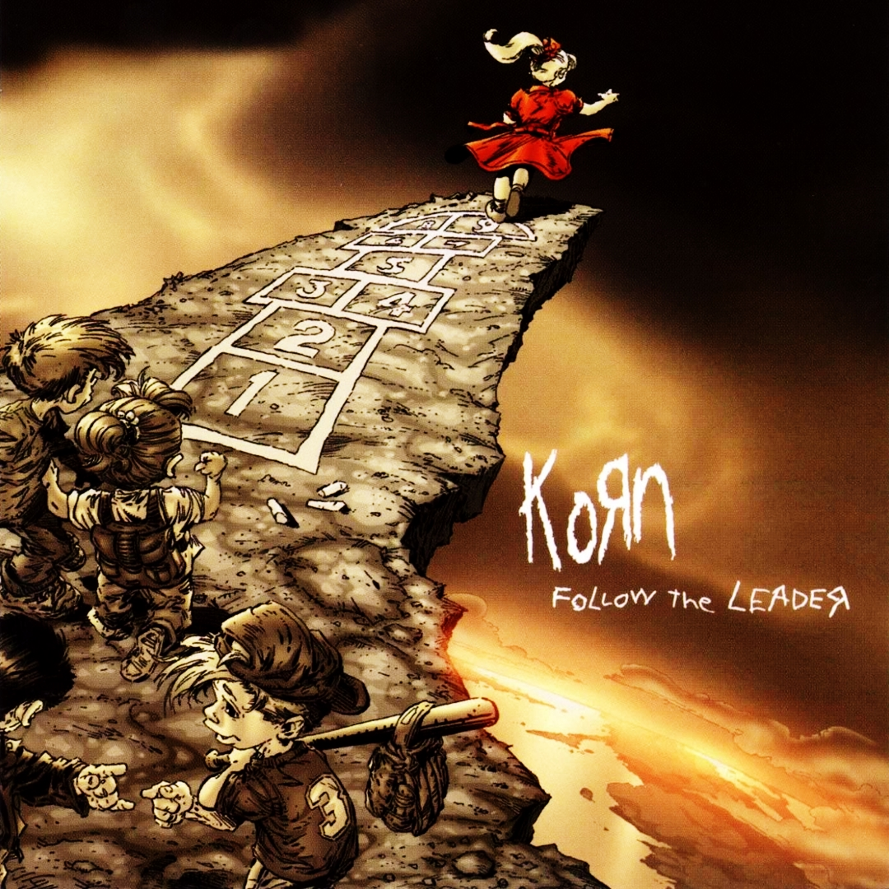
Then you can read that file into a function from the package
# Get the color palette
colours_vector <- create_palette(image_path = image_path, number_of_colors =10, type_of_variable = "categorical")

Once you do this, it will output a list of hex codes corresponding to the most representative colors in the image.
Let’s put the hex codes side by side with the album art:

So here we have a color palette associated with the album Follow The Leader. Let’s see how it looks on some data.
ggplot(data=iris, aes(x=Sepal.Length, y=Sepal.Width, color=Species)) +
geom_point(size=2) +
scale_color_manual(values=colours_vector[1:3])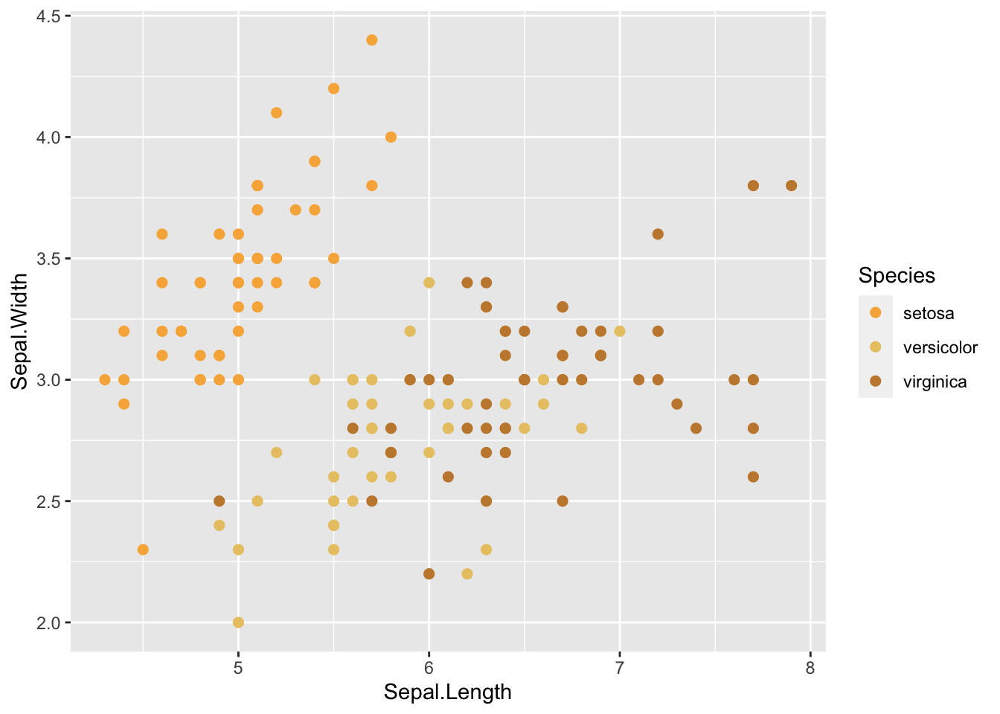
Other Nu-Metal Album Classics
I decided to do this with a few other popular artists from my childhood. Let’s do a Fallen palette.
Evanescence - Fallen
Wake me up! I can’t wake up! Sorry. I am getting too pumped up for this.
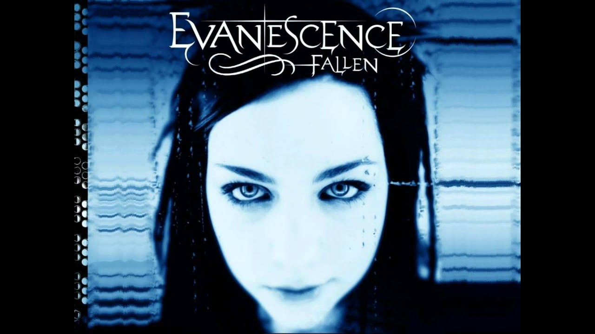
image_path <-here::here("Blog", "images","fallen1.jpeg")# Get the color palette
colours_vector <- create_palette(image_path = image_path, number_of_colors =10, type_of_variable = "categorical")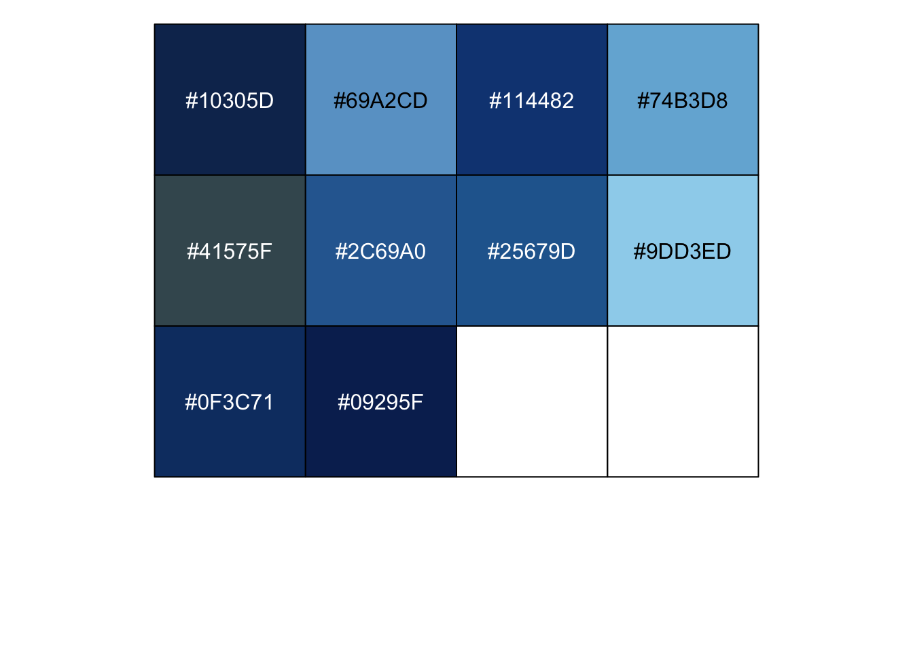

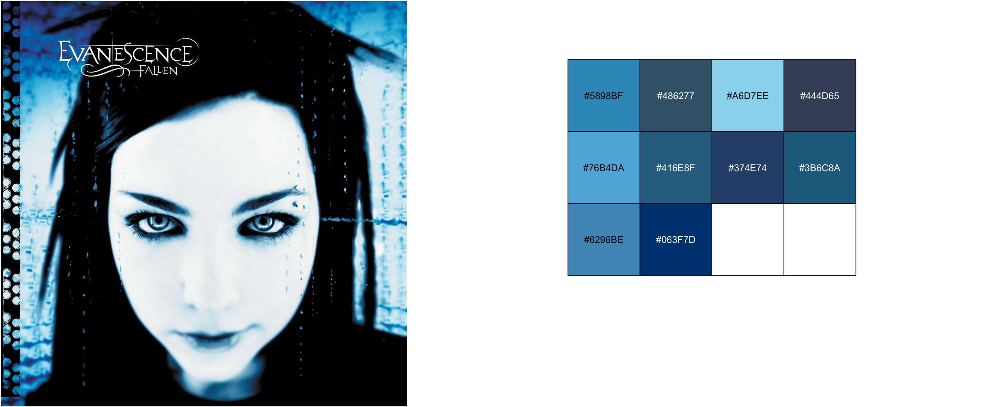
ggplot(data=iris, aes(x=Sepal.Length, y=Sepal.Width, color=Species)) +
geom_point(size=2) +
scale_color_manual(values=colours_vector[1:3])
Limp Bizkit - Significant Other

image_path <- here::here("Blog", "images","LB.jpeg")# Get the color palette
colours_vector <- create_palette(image_path = image_path, number_of_colors =10, type_of_variable = "categorical")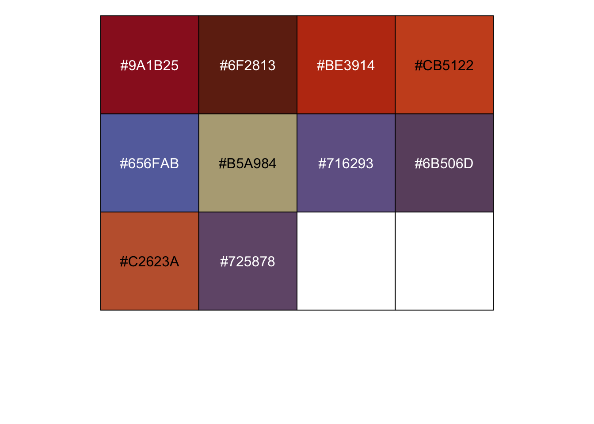


ggplot(data=iris, aes(x=Sepal.Length, y=Sepal.Width, color=Species)) +
geom_point(size=2) +
scale_color_manual(values=colours_vector[1:3])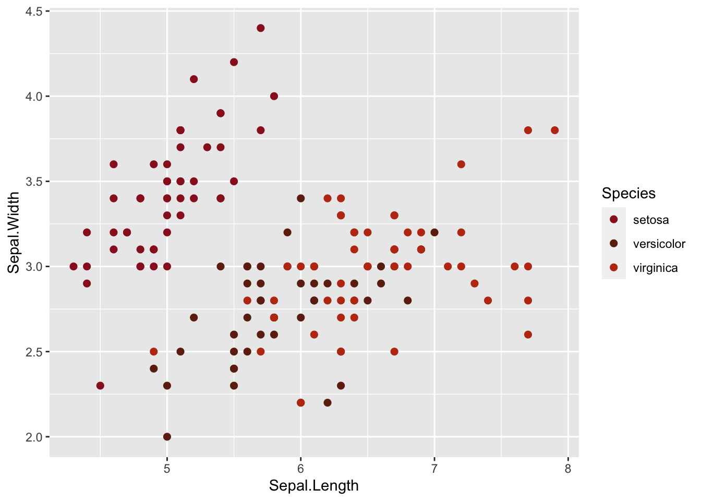
Linkin Park - Hybrid Theory
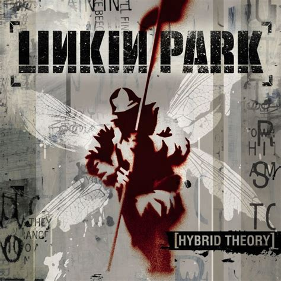
image_path <- here::here("Blog", "images","LP.jpeg")# Get the color palette
colours_vector <- create_palette(image_path = image_path, number_of_colors =10, type_of_variable = "categorical")
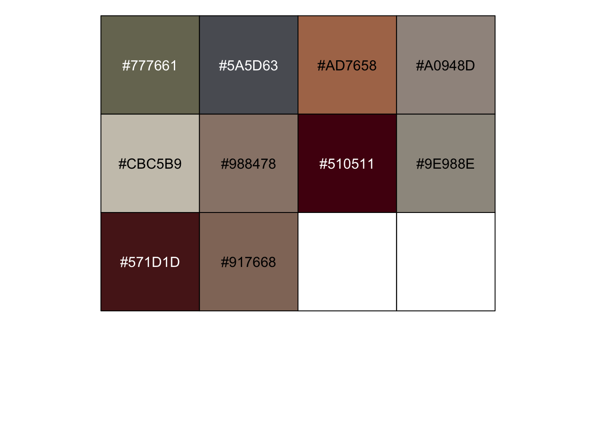
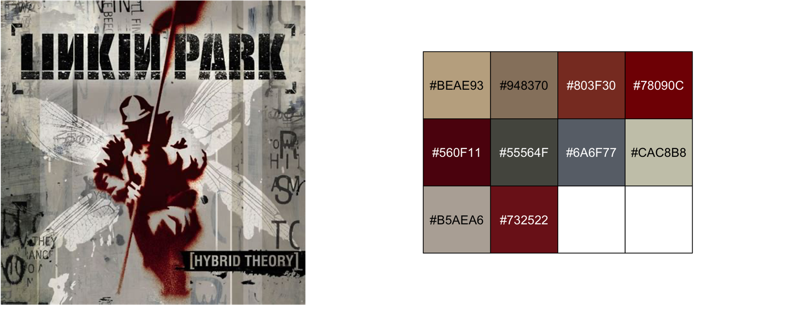
#|fig-align: "center"
ggplot(data=iris, aes(x=Sepal.Length, y=Sepal.Width, color=Species)) +
geom_point(size=2) +
scale_color_manual(values=colours_vector[1:3])
Slipknot - Self-titled

image_path <- here::here("Blog", "images","slipknot.jpeg")colours_vector <- create_palette(image_path = image_path, number_of_colors =10, type_of_variable = "categorical")

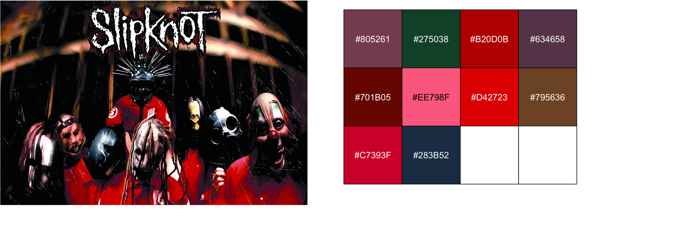
ggplot(data=iris, aes(x=Sepal.Length, y=Sepal.Width, color=Species)) +
geom_point(size=2) +
scale_color_manual(values=colours_vector[3:6])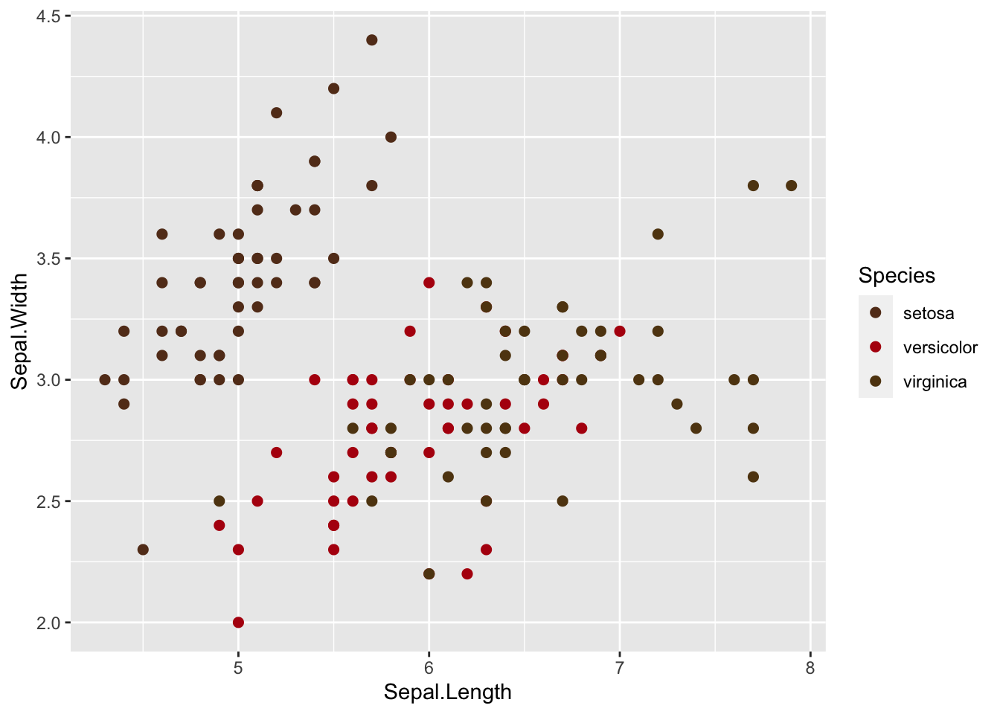
R Package
I bundled all the hex codes in a package called NuMetalRhttps://github.com/jgeller112/NuMetalR.
I use the function nu-paelettes to extract hex codes associated with a band.
source(here::here("Blog", "R", "nu_palettes.R"))
korn_color= nu_palettes("korn")
korn_color [1] "#D01809" "#EC3D09" "#830301" "#B95011" "#DDA547" "#D45F1D" "#EDCA79"
[8] "#A4672A" "#AA5829" "#A4672A" "#FBE477"print.palette prints out the actual colors from the hex codes.
# print colors
print.palette(korn_color)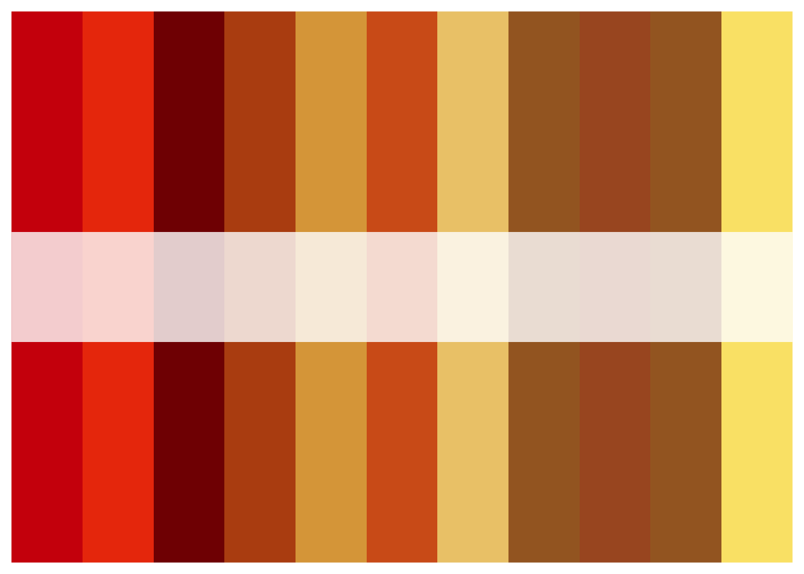